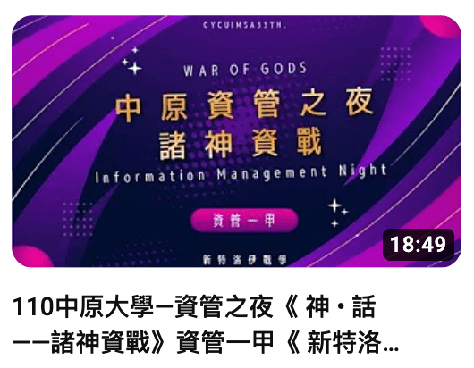
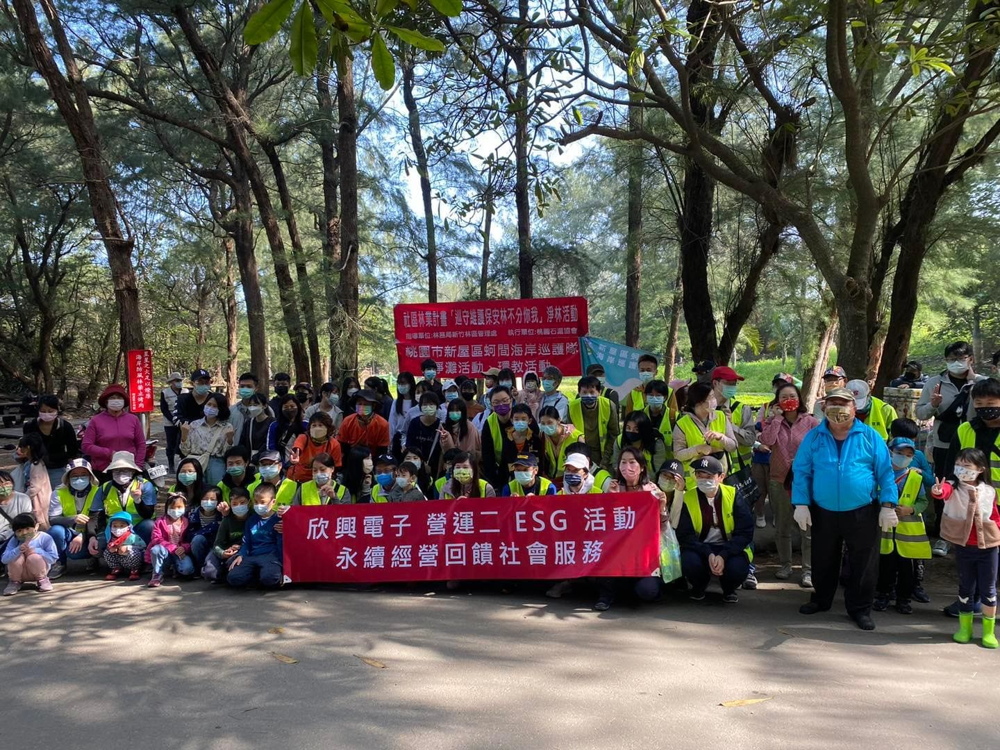
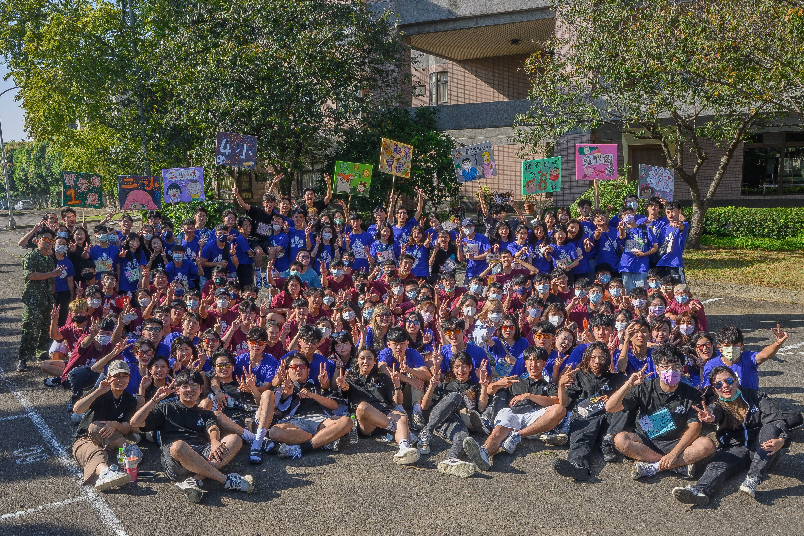
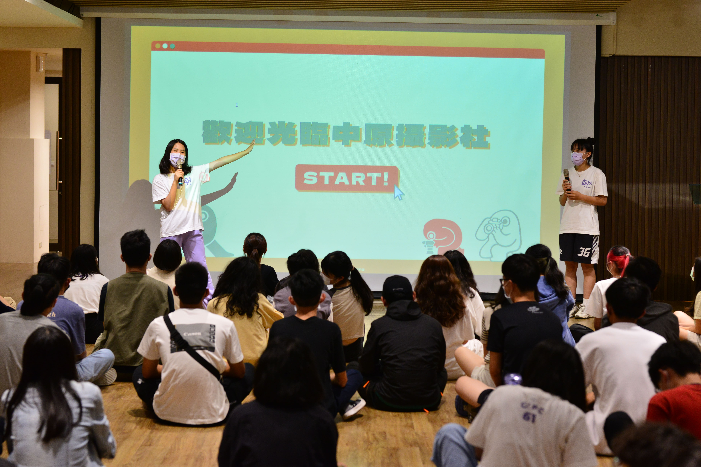

EXPERIENCE

甸記、澱記、惦記
一群在剛開學完全不認識的人們在緣分驅使下成為了一組，在這堂課之中我們與緬甸華文教育服務團合作，創建了屬於我們自己的公益手工餅乾品牌。
從品牌名發想、產出各式文宣、宣傳影片拍攝剪輯、問卷調查、line機器人與官網架設、走進校園推銷、與餐車合作販售、倉儲管理，在這堂課中我們彷彿真的創建了一個企業。
我們不僅學會了一間公司的運行，也在這之中學習到滿滿的溝通（無論是組員還是與合作方）、上台報告宣傳推銷的能力。
在這堂之中我擔任的是CEO的職位，我負責團隊統籌、執掌每個任務的推進、與合作方洽談與溝通。
我超級喜歡我們這組的組員，每個都是負責又努力的好夥伴，也很喜歡我們合作的緬甸華文教育服務團，他們既配合且體貼善良。在這堂課之中我收穫極多。

新特洛伊戰爭
資管之夜是資管系一直以來的傳統，我們在此次活動中出一個二十多分鐘的表演，每個班上的成員各司其職，從演戲、跳舞、美宣、後勤，一個60多人的班級在此活動中相互合作為了一個表演努力。
在資管之夜之中我擔任的是導演，負責整個表演的流程與走向、演員的呈現指導，在資管之夜前幾星期我們每天晚上都會練習彩排、互相勉勵，在此活動之中能夠和班上同學一起為了同個目標前進的感覺很好且使人滿足，回想起來，那真是一段溫馨有趣且令人會心一笑的時光。

海好有你
這是一堂讓班上同學分組與民間組織合作的課，我們與「桃園市新屋區蚵間海岸巡護隊」合作，透過實際前往蚵間海岸淨灘，身體力行維護海灘的整潔。 蚵間海岸巡護隊每個月都會舉行一次淨灘活動給民眾參與，無論任何條件的民眾都可以填寫表單一同響應，第一次淨灘的回憶帶給我的情緒也是很失望與痛心的，我從來沒有想像到原來無論辦了多少次的淨灘活動，海邊的垃圾仍然源源不絕，更深入的沙內永遠都會再度冒出一根吸管或是一個塑膠袋。 我們將淨灘的反饋與和巡護隊的訪談過程統整成計畫書，在管理學課堂上與教授同學報告，也參與了學校舉辦的全人關懷獎競賽，從準備初選書審報告到複選與評審簡報詢答，我們整組組員都下足了苦心，最後贏得佳作。

WOO！金天資有我和你！
在疫情稍微緩和下，資管系與物理系、財金系一同舉辦三系聯合宿營，我加入了活動組，無論是水關、陸關、RPG、夜教、營火晚會、PARTY TIME晚會，都是由活動組規劃操刀。
為此活動，整個宿營的工人們也練習了兩個月的時間，將近每個平日的早上十點到晚上十點，我們幾乎將整個暑假投入在宿營之中，為了的就是一個活動的盡善盡美和新生們的大學生活有難忘的開始。

中原大學第61屆攝影社
從小到大對攝影都相當有興趣，因此在大一時毫無懸念的加入了攝影社，參與了許多攝影課程與社團活動，升上大二時因緣際會的擔任了副社長一職。
當社員與幹部是截然不同的感受，在上社課之餘也要安排許多社團活動供社員參與。
今年剛開學時，我主掌了攝影社本年度的期初社大，從人員配置、團康活動、流程跑位、各項環節的進行都由我規劃與安排，也擔任了主持人的角色。這是我第一次舉辦規模將近一百人的活動，也是我第一次擔任如此大活動的主持人，光與幹部們開會就花了兩個月，即使耗費心神，但看到當天社員們玩得開心的樣子和給予我們正向的反饋後，就讓人心滿意足了。